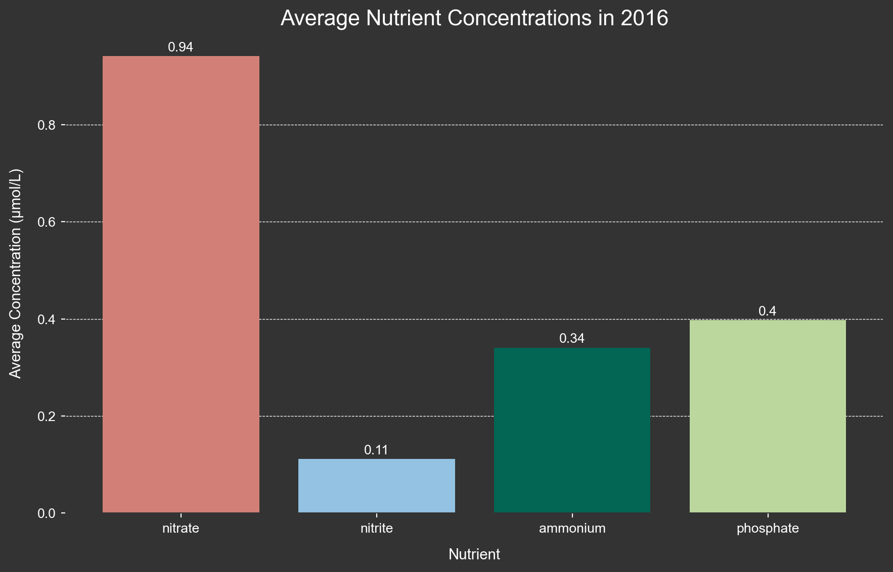

Visualizing Various Data Types from the kelpGeoMod Data Repository
This post uses data from the kelpGeoMod data repository and provides examples of data visualization in Python using Folium, Plotly, Matplotlib, and Rasterio.
Show the code
# Import necessary libraries#| warning: falseimport osimport pandas as pdimport numpy as npimport plotly.graph_objs as goimport geopandas as gpdimport foliumfrom folium import DivIconfrom IPython.display import displayimport rasterioimport rasterio.plotimport matplotlib.pyplot as pltfrom rasterio.warp import transform_geomfrom matplotlib import rcParams
Reading in the data:
Data for this notebook come from the kelpGeoMod Google Drive data repository. This data repository was created as a Bren Master of Environmental Data Science capstone project by Erika Egg, Jessica French, Javier Patrón, and Elke Windschitl.
Show the code
# Setting the data directory pathdata_dir ="/Users/elkewindschitl/Documents/MEDS/kelpGeoMod/final-data"# Reading in the area of interest shapefileaoi_path = os.path.join(data_dir, "02-intermediate-data/02-aoi-sbchannel-shapes-intermediate/aoi-sbchannel.shp")aoi = gpd.read_file(aoi_path)# Reading in the "full synthesized" data setfull_synth_path = os.path.join(data_dir, "03-analysis-data/03-data-synthesization-analysis/full-synthesized.csv")# Read the CSV file into a dataframefull_synth_df = pd.read_csv(full_synth_path)# Reading in the "observed nutrients" data setobs_nutr_path = os.path.join(data_dir, "03-analysis-data/03-data-synthesization-analysis/observed-nutrients-synthesized.csv")# Read the CSV file into a dataframeobs_nutr_df = pd.read_csv(obs_nutr_path)# Setting path to depth rasterraster_path = os.path.join(data_dir, "02-intermediate-data/06-depth-intermediate/depth.tif")
The area of interest:
These data come from the Santa Barbara Channel between 2014-2022.
Show the code
# Reproject geometries to WGS84aoi_84 = aoi.to_crs(epsg=4326)# Create a Folium map centered around the AOIm = folium.Map(location=[aoi_84['geometry'].centroid.y.mean(), aoi_84['geometry'].centroid.x.mean()], zoom_start=9, tiles='Stamen Terrain')# Define a function to set shape color based on propertiesdef style_function(feature):return {'fillColor': '#93C2E2', 'color': '#326587','weight': 4,'fillOpacity': 0.6 }# Add GeoJSON data to the map with custom stylefolium.GeoJson(aoi_84.to_json(), style_function=style_function).add_to(m)# Display the mapdisplay(m)
Make this Notebook Trusted to load map: File -> Trust Notebook
Visualizing kelp data:
Here I use the “full synthesized data set” to visualize how kelp area in the region changes through time. First, I want to check out the data set.
Show the code
# Check the data frameprint(full_synth_df.head())
year quarter lat lon depth sst kelp_area \
0 2014 1 34.590 -120.646 -46.320492 14.016689 NaN
1 2014 1 34.582 -120.646 -42.287880 14.040511 NaN
2 2014 1 34.574 -120.646 -45.276779 14.059811 NaN
3 2014 1 34.566 -120.646 -54.458694 14.074700 NaN
4 2014 1 34.566 -120.638 -23.270111 14.067266 NaN
kelp_biomass nitrate_nitrite phosphate ammonium
0 NaN NaN NaN NaN
1 NaN NaN NaN NaN
2 NaN NaN NaN NaN
3 NaN NaN NaN NaN
4 NaN NaN NaN NaN
I need to do a little wrangling to get the sum of the kelp area for each year/quarter combination. Each row in this data set represents one grid cell at one quarter in one year originating from raster data (for more information on the data, see the kelpGeoMod metadata throughout the Google Drive).
Show the code
# Combine year and quarter columns into a single datetime columnfull_synth_df['Date'] = pd.to_datetime(full_synth_df['year'].astype(str) +'-Q'+ full_synth_df['quarter'].astype(str))# Group by date and calculate the mean for specific columns and the sum for kelp_areaaggregation = {'sst': 'mean','year': 'mean','quarter': 'mean','kelp_area': 'sum'# Sum the kelp_area column}sum_kelp = full_synth_df.groupby('Date').agg(aggregation)# Reset index to move "Season" from index to a columnsum_kelp = sum_kelp.reset_index()# Convert from m^2 to km^2 and round valuessum_kelp['kelp_area'] = (sum_kelp['kelp_area'] /1000000).round(2)sum_kelp['year'] = sum_kelp['year'].astype(int)# Define a custom function to generate the new column based on "quarter" and "year"def generate_season(row): quarter = row["quarter"] year = row["year"]if quarter ==1:returnf"Winter {year}"elif quarter ==2:returnf"Spring {year}"elif quarter ==3:returnf"Summer {year}"elif quarter ==4:returnf"Fall {year}"else:return"Invalid Quarter"# Apply the custom function to create the new "Season" columnsum_kelp["Season"] = sum_kelp.apply(generate_season, axis=1)# Print the summarized dataframeprint(sum_kelp.head())
Date sst year quarter kelp_area Season
0 2014-01-01 14.916278 2014 1.0 1.23 Winter 2014
1 2014-04-01 16.053795 2014 2.0 2.43 Spring 2014
2 2014-07-01 19.865393 2014 3.0 2.15 Summer 2014
3 2014-10-01 18.694880 2014 4.0 0.37 Fall 2014
4 2015-01-01 16.293984 2015 1.0 0.40 Winter 2015
Here I show the kelp area over time with the help of Plotly!
Show the code
# Calculate the overall range for y-axis based on kelp area datay_axis_range = [0, sum_kelp['kelp_area'].max() +1]# Create the figurefig = go.Figure()# Plotting the Kelp Area data with custom color and line stylefig.add_trace(go.Scatter( x=sum_kelp.Date, y=sum_kelp['kelp_area'], mode='lines+markers', name='', line=dict(color='#BCD79D'), marker=dict(size=8), hovertemplate='Season: %{text}<br>Kelp Area: %{y} km²'))# Update layout for interactivityfig.update_layout( title='Kelp area is highly variable in the Santa Barbara Channel', title_font=dict(family='Arial', size=22, color='white'), title_x=0.5, font=dict(family='Arial', size=14, color='white'), xaxis=dict(title='Date', showgrid=True, gridcolor='rgba(211, 211, 211, 0.5)', showline=True, linewidth=1, linecolor='white'), yaxis=dict(title='Total Kelp Area (km²)', showgrid=False, showline=False, linewidth=1, linecolor='white', range=y_axis_range, tickmode='linear', dtick=1), legend=dict(font=dict(size=14, color='white')), plot_bgcolor='#333333', paper_bgcolor='#333333', height=600, margin=dict(b=60))# Update hover text with 'Season'fig.update_traces( text=sum_kelp['Season'])# Show the interactive plotfig.show()
Visualizing nutrient data:
Next I visualize the ocean nutrient data based on averages of the seasonal values over time with Plotly. Similarly, I needed to do a little wrangling first.
Show the code
# Check the data frameprint(obs_nutr_df.head())
year quarter lat lon temp nitrate nitrite \
0 2014 1 34.01032 -118.84232 14.90600 0.4000 0.08300
1 2015 1 34.45118 -120.52470 15.87580 0.3125 0.06225
2 2015 1 34.40263 -119.80203 16.32375 0.0500 0.03950
3 2015 1 34.27690 -120.02423 16.35700 0.0300 0.00900
4 2015 1 34.25833 -119.32373 16.01060 0.1525 0.12875
nitrate_nitrite phosphate ammonium sst nutrient_source \
0 0.48300 0.376667 0.066667 15.950767 CalCOFI
1 0.37475 0.385000 0.125000 14.712589 CalCOFI
2 0.08950 0.385000 0.060000 14.730477 CalCOFI
3 0.03900 0.310000 0.010000 14.923833 CalCOFI
4 0.28125 0.567500 0.227500 14.923833 CalCOFI
depth kelp_area kelp_biomass
0 -87.118073 NaN NaN
1 -112.089943 NaN NaN
2 -109.903297 NaN NaN
3 -481.472626 NaN NaN
4 -481.472626 NaN NaN
Show the code
# Combine year and quarter columns into a single datetime columnobs_nutr_df['Date'] = pd.to_datetime(obs_nutr_df['year'].astype(str) +'-Q'+ obs_nutr_df['quarter'].astype(str))# Define a custom function to generate the new column based on "quarter" and "year"def generate_season(row): quarter = row["quarter"] year = row["year"]if quarter ==1:returnf"Winter {year}"elif quarter ==2:returnf"Spring {year}"elif quarter ==3:returnf"Summer {year}"elif quarter ==4:returnf"Fall {year}"else:return"Invalid Quarter"# Apply the custom function to create the new "Season" columnobs_nutr_df["Season"] = obs_nutr_df.apply(generate_season, axis=1)# Group by date and season, and calculate the mean for each columnmean_nutr = obs_nutr_df.groupby(['Date', 'Season']).mean(numeric_only=True)# Reset index to move "Season" from index to a columnmean_nutr = mean_nutr.reset_index()# Drop unused columnsmean_nutr = mean_nutr.drop(['lat', 'lon', 'depth'], axis=1)# Print the summarized dataframeprint(mean_nutr.head())
# Calculate the overall range for y-axis that covers all nutrient datay_axis_range = [0, mean_nutr[['nitrate', 'nitrite', 'phosphate', 'ammonium']].max().max() +0.5]# Create the figurefig = go.Figure()# Plotting the data with custom colors and line stylesfig.add_trace(go.Scatter( x=mean_nutr.Date, y=mean_nutr['nitrate'], mode='lines+markers', name='Nitrate', line=dict(color='#D28077'), hovertemplate='Season: %{text}<br>Concentration: %{y:.2f} μmol/L',))fig.add_trace(go.Scatter( x=mean_nutr.Date, y=mean_nutr['nitrite'], mode='lines+markers', name='Nitrite', line=dict(color='#93C2E2'), hovertemplate='Season: %{text}<br>Concentration: %{y:.2f} μmol/L'))fig.add_trace(go.Scatter( x=mean_nutr.Date, y=mean_nutr['phosphate'], mode='lines+markers', name='Phosphate', line=dict(color='#BCD79D'), hovertemplate='Season: %{text}<br>Concentration: %{y:.2f} μmol/L'))fig.add_trace(go.Scatter( x=mean_nutr.Date, y=mean_nutr['ammonium'], mode='lines+markers', name='Ammonium', line=dict(color='#036554'), hovertemplate='Season: %{text}<br>Concentration: %{y:.2f} μmol/L'))# Update layout for interactivityfig.update_layout( title='Nutrient concentrations trend higher in winter and spring and lower in summer and fall', title_font=dict(family='Arial', size=22, color='white'), title_x=0.5, font=dict(family='Arial', size=14, color='white'), xaxis=dict(title='Time', showgrid=True, gridcolor='rgba(211, 211, 211, 0.5)', showline=True, linewidth=1, linecolor='white'), yaxis=dict(title='Average Concentration (μmol/L)', showgrid=False, showline=False, linewidth=1, linecolor='white', range=y_axis_range, tickmode='linear', dtick=1), legend=dict(font=dict(size=14, color='white')), plot_bgcolor='#333333', paper_bgcolor='#333333', height=600)# Update hover text with 'Season'fig.update_traces( text=mean_nutr['Season'])# Show the interactive plotfig.show()
I want to more closely look at average nutrient concentrations during the el Niño year 2016.
Show the code
# Filter for the year 2016filtered_2016 = mean_nutr[mean_nutr['year'] ==2016]# Calculate the average nutrient concentrationsaverage_2016 = filtered_2016[['nitrate', 'nitrite', 'ammonium', 'phosphate']].agg('mean')# Create a DataFrame with 'Nutrient' and 'Concentration' columnsaverage_2016 = pd.DataFrame({'Nutrient': average_2016.index, 'Concentration': average_2016.values})# Create the bar chartfig, ax = plt.subplots(figsize=(9.3, 6)) # Adjusted figsizeax.set_facecolor('#333333') # Set the background color for the plotting areacolors = ['#D28077', '#93C2E2', '#036554', '#BCD79D']bars = ax.bar(average_2016['Nutrient'], average_2016['Concentration'], color=colors)ax.set_xlabel('Nutrient', color='white', fontname='Arial', size =11, labelpad =10)ax.set_ylabel('Average Concentration (μmol/L)', color='white', fontname='Arial', size =11, labelpad =10)# Adjusted title font size (no bold)ax.set_title('Average Nutrient Concentrations in 2016', color='white', fontname='Arial', fontsize=16)ax.tick_params(axis='x', rotation=0, colors='white')ax.tick_params(axis='y', colors='white')# Add value labels on top of the barsfor bar in bars: yval = bar.get_height() ax.text(bar.get_x() + bar.get_width()/2, yval +0.01, round(yval, 2), ha='center', color='white', fontsize=10, fontname='Arial')# Adding white grid linesax.yaxis.grid(color='white', linestyle='--', linewidth=0.5)# Moving grid lines behind the dataax.set_axisbelow(True)# Adding white spines (lines along the axes)ax.spines['bottom'].set_color('white')ax.spines['left'].set_color('white')plt.tight_layout()# Show the plotplt.show()

Visualizing depth data:
Next, I want to get a better understanding of ocean depth in the channel. Here I create a histogram of depths. First, though, I will need to average the depth over all time periods grouped by lat and lon. This is because depth remains constant over all years and is thus duplicated in the data set. However, I do not want duplicates in the histogram.
Show the code
# Group by "lat" and "lon" and calculate the average of the "depth" columngrouped_data = full_synth_df.groupby(['lat', 'lon'])['depth'].mean().round()# Because some grid cells overlap with land, the value is greater than zero, but I want to ceiling the data at zero.# Convert the grouped data back to a DataFramegrouped_df = grouped_data.reset_index()# Replace values greater than zero with zero in the "depth" columngrouped_df['depth'] =-1* grouped_df['depth'].apply(lambda x: 0if x >0else x)# Print the modified DataFrameprint(grouped_df)
Here I visualize the depth data in a histogram with plotly! Again, this data was originally in the form of a raster, so each measurement of depth represents a 0.008° x 0.008° grid cell.
Show the code
# Calculate the histogram manuallyhist, bins = np.histogram(grouped_df.depth, bins=range(0, int(grouped_df['depth'].max()) +1, 50))bin_centers = bins[:-1] + (bins[1] - bins[0]) /2bin_ranges = [f'Range: {bins[i]}-{bins[i +1] -1} m'for i inrange(len(bins) -1)]hover_text = [f'{bin_ranges[i]}<br>Count: {hist[i]}'for i inrange(len(bins) -1)]# Create the plotfig = go.Figure()# Plotting the data with custom colors and line stylesfig.add_trace(go.Bar( x=bin_centers, y=hist, hovertext=hover_text, hoverinfo='text', width=bins[1] - bins[0], marker_color='#02a8c9', marker_line=dict(color='rgba(211, 211, 211, 0.5)', width=1)))# Update layout for interactivityfig.update_layout( xaxis_title='Average Depth (m)', yaxis_title='Frequency', title='Histogram of Depths in the Santa Barbara Channel', title_font=dict(family='Arial', size=22, color='white'), font=dict(family='Arial', size=14, color='white'), xaxis=dict(showgrid=False, showline=False, linewidth=1, linecolor='white'), yaxis=dict(showgrid=True, gridcolor='rgba(211, 211, 211, 0.5)', showline=False, linewidth=1, linecolor='white'), plot_bgcolor='#333333', paper_bgcolor='#333333', height=600, title_x=0.5, annotations=[dict( x=0.5, y=1.08, showarrow=False, text="where every data point represents 0.008° x 0.008° (approximately 1 km)", xref="paper", yref="paper", font=dict(family='Arial', size=14, color='white') ) ])# Show the interactive plotfig.show()
Here is the depth data as a raster layer.
Show the code
# Set the font family for the entire plotrcParams['font.family'] ='sans-serif'rcParams['font.sans-serif'] = ['Arial'] # Use Arial font or another available sans-serif font# Customize the figure background color, axes background color, and text colorrcParams['figure.figsize'] = (10, 8) # Set the figure size (width, height) in inchesrcParams['figure.facecolor'] ='#333333'# Set background color of the figurercParams['axes.edgecolor'] ='#333333'# Set color of axes lines to whitercParams['axes.labelcolor'] ='white'# Set color of axes labels to whitercParams['xtick.color'] ='white'# Set color of x-axis ticks to whitercParams['ytick.color'] ='white'# Set color of y-axis ticks to whitercParams['text.color'] ='white'# Set text color to white# Open the raster file using rasteriowith rasterio.open(raster_path) as src:# Set up colormap and normalization cmap = plt.cm.Blues_r # Reverse the Blues colormap cmap.set_bad(color='#333333') # Set NaN values to be white norm = plt.Normalize(vmin=-1000, vmax=20)# Create a larger figure plt.figure(figsize=(10.5, 8.5))# Add "Latitude" and "Longitude" labels using plt.text plt.text(0.5, -0.16, 'Longitude', transform=plt.gca().transAxes, ha='center', color='white') plt.text(-0.1, 0.5, 'Latitude', transform=plt.gca().transAxes, va='center', rotation='vertical', color='white')# Plot the raster data using rasterio's show function rasterio.plot.show(src, cmap=cmap, norm=norm, title='Depth in the Santa Barbara Channel', origin='upper')plt.show()
Citation
BibTeX citation:
@online{windschitl2023,
author = {Elke Windschitl},
title = {Data {Visualization} {Examples} in {Python}},
date = {2023-08-19},
url = {https://elkewind.github.io/posts/2023-08-19-python-viz},
langid = {en}
}
---title: "Data Visualization Examples in Python"author: - name: Elke Windschitl url: https://elkewind.github.iodescription: "Using Python libraries to visualize data"image: "python.jpg"date: 2023-08-19categories: [Data Visualization, Python]citation: url: https://elkewind.github.io/posts/2023-08-19-python-vizformat: html: code-fold: true code-copy: true code-summary: "Show the code" code-line-numbers: true code-tools: true code-block-border-left: truetoc: truedraft: falsepage-layout: full---## Visualizing Various Data Types from the kelpGeoMod Data RepositoryThis post uses data from the kelpGeoMod data repository and provides examples of data visualization in Python using Folium, Plotly, Matplotlib, and Rasterio.```{python}# Import necessary libraries#| warning: falseimport osimport pandas as pdimport numpy as npimport plotly.graph_objs as goimport geopandas as gpdimport foliumfrom folium import DivIconfrom IPython.display import displayimport rasterioimport rasterio.plotimport matplotlib.pyplot as pltfrom rasterio.warp import transform_geomfrom matplotlib import rcParams```### Reading in the data:Data for this notebook come from the kelpGeoMod [Google Drive](https://drive.google.com/drive/u/2/folders/1sJq_9RnsARR9mkmrcrn4O_1630VD-e-t) data repository. This data repository was created as a Bren Master of Environmental Data Science capstone project by Erika Egg, Jessica French, Javier Patrón, and Elke Windschitl.```{python}#| warning: false# Setting the data directory pathdata_dir ="/Users/elkewindschitl/Documents/MEDS/kelpGeoMod/final-data"# Reading in the area of interest shapefileaoi_path = os.path.join(data_dir, "02-intermediate-data/02-aoi-sbchannel-shapes-intermediate/aoi-sbchannel.shp")aoi = gpd.read_file(aoi_path)# Reading in the "full synthesized" data setfull_synth_path = os.path.join(data_dir, "03-analysis-data/03-data-synthesization-analysis/full-synthesized.csv")# Read the CSV file into a dataframefull_synth_df = pd.read_csv(full_synth_path)# Reading in the "observed nutrients" data setobs_nutr_path = os.path.join(data_dir, "03-analysis-data/03-data-synthesization-analysis/observed-nutrients-synthesized.csv")# Read the CSV file into a dataframeobs_nutr_df = pd.read_csv(obs_nutr_path)# Setting path to depth rasterraster_path = os.path.join(data_dir, "02-intermediate-data/06-depth-intermediate/depth.tif")```### The area of interest:These data come from the Santa Barbara Channel between 2014-2022.```{python}#| warning: false# Reproject geometries to WGS84aoi_84 = aoi.to_crs(epsg=4326)# Create a Folium map centered around the AOIm = folium.Map(location=[aoi_84['geometry'].centroid.y.mean(), aoi_84['geometry'].centroid.x.mean()], zoom_start=9, tiles='Stamen Terrain')# Define a function to set shape color based on propertiesdef style_function(feature):return {'fillColor': '#93C2E2', 'color': '#326587','weight': 4,'fillOpacity': 0.6 }# Add GeoJSON data to the map with custom stylefolium.GeoJson(aoi_84.to_json(), style_function=style_function).add_to(m)# Display the mapdisplay(m)```### Visualizing kelp data:Here I use the "full synthesized data set" to visualize how kelp area in the region changes through time. First, I want to check out the data set.```{python}#| warning: false# Check the data frameprint(full_synth_df.head())```I need to do a little wrangling to get the sum of the kelp area for each year/quarter combination. Each row in this data set represents one grid cell at one quarter in one year originating from raster data (for more information on the data, see the kelpGeoMod [metadata](https://drive.google.com/drive/u/2/folders/1SNAff0L5p2M6L8HQB29cTtJT5qWeusgg) throughout the Google Drive).```{python}#| warning: false# Combine year and quarter columns into a single datetime columnfull_synth_df['Date'] = pd.to_datetime(full_synth_df['year'].astype(str) +'-Q'+ full_synth_df['quarter'].astype(str))# Group by date and calculate the mean for specific columns and the sum for kelp_areaaggregation = {'sst': 'mean','year': 'mean','quarter': 'mean','kelp_area': 'sum'# Sum the kelp_area column}sum_kelp = full_synth_df.groupby('Date').agg(aggregation)# Reset index to move "Season" from index to a columnsum_kelp = sum_kelp.reset_index()# Convert from m^2 to km^2 and round valuessum_kelp['kelp_area'] = (sum_kelp['kelp_area'] /1000000).round(2)sum_kelp['year'] = sum_kelp['year'].astype(int)# Define a custom function to generate the new column based on "quarter" and "year"def generate_season(row): quarter = row["quarter"] year = row["year"]if quarter ==1:returnf"Winter {year}"elif quarter ==2:returnf"Spring {year}"elif quarter ==3:returnf"Summer {year}"elif quarter ==4:returnf"Fall {year}"else:return"Invalid Quarter"# Apply the custom function to create the new "Season" columnsum_kelp["Season"] = sum_kelp.apply(generate_season, axis=1)# Print the summarized dataframeprint(sum_kelp.head())```Here I show the kelp area over time with the help of Plotly!```{python}#| warning: false# Calculate the overall range for y-axis based on kelp area datay_axis_range = [0, sum_kelp['kelp_area'].max() +1]# Create the figurefig = go.Figure()# Plotting the Kelp Area data with custom color and line stylefig.add_trace(go.Scatter( x=sum_kelp.Date, y=sum_kelp['kelp_area'], mode='lines+markers', name='', line=dict(color='#BCD79D'), marker=dict(size=8), hovertemplate='Season: %{text}<br>Kelp Area: %{y} km²'))# Update layout for interactivityfig.update_layout( title='Kelp area is highly variable in the Santa Barbara Channel', title_font=dict(family='Arial', size=22, color='white'), title_x=0.5, font=dict(family='Arial', size=14, color='white'), xaxis=dict(title='Date', showgrid=True, gridcolor='rgba(211, 211, 211, 0.5)', showline=True, linewidth=1, linecolor='white'), yaxis=dict(title='Total Kelp Area (km²)', showgrid=False, showline=False, linewidth=1, linecolor='white', range=y_axis_range, tickmode='linear', dtick=1), legend=dict(font=dict(size=14, color='white')), plot_bgcolor='#333333', paper_bgcolor='#333333', height=600, margin=dict(b=60))# Update hover text with 'Season'fig.update_traces( text=sum_kelp['Season'])# Show the interactive plotfig.show()```### Visualizing nutrient data:Next I visualize the ocean nutrient data based on averages of the seasonal values over time with Plotly. Similarly, I needed to do a little wrangling first.```{python}#| warning: false# Check the data frameprint(obs_nutr_df.head())``````{python}#| warning: false# Combine year and quarter columns into a single datetime columnobs_nutr_df['Date'] = pd.to_datetime(obs_nutr_df['year'].astype(str) +'-Q'+ obs_nutr_df['quarter'].astype(str))# Define a custom function to generate the new column based on "quarter" and "year"def generate_season(row): quarter = row["quarter"] year = row["year"]if quarter ==1:returnf"Winter {year}"elif quarter ==2:returnf"Spring {year}"elif quarter ==3:returnf"Summer {year}"elif quarter ==4:returnf"Fall {year}"else:return"Invalid Quarter"# Apply the custom function to create the new "Season" columnobs_nutr_df["Season"] = obs_nutr_df.apply(generate_season, axis=1)# Group by date and season, and calculate the mean for each columnmean_nutr = obs_nutr_df.groupby(['Date', 'Season']).mean(numeric_only=True)# Reset index to move "Season" from index to a columnmean_nutr = mean_nutr.reset_index()# Drop unused columnsmean_nutr = mean_nutr.drop(['lat', 'lon', 'depth'], axis=1)# Print the summarized dataframeprint(mean_nutr.head())``````{python}#| warning: false# Calculate the overall range for y-axis that covers all nutrient datay_axis_range = [0, mean_nutr[['nitrate', 'nitrite', 'phosphate', 'ammonium']].max().max() +0.5]# Create the figurefig = go.Figure()# Plotting the data with custom colors and line stylesfig.add_trace(go.Scatter( x=mean_nutr.Date, y=mean_nutr['nitrate'], mode='lines+markers', name='Nitrate', line=dict(color='#D28077'), hovertemplate='Season: %{text}<br>Concentration: %{y:.2f} μmol/L',))fig.add_trace(go.Scatter( x=mean_nutr.Date, y=mean_nutr['nitrite'], mode='lines+markers', name='Nitrite', line=dict(color='#93C2E2'), hovertemplate='Season: %{text}<br>Concentration: %{y:.2f} μmol/L'))fig.add_trace(go.Scatter( x=mean_nutr.Date, y=mean_nutr['phosphate'], mode='lines+markers', name='Phosphate', line=dict(color='#BCD79D'), hovertemplate='Season: %{text}<br>Concentration: %{y:.2f} μmol/L'))fig.add_trace(go.Scatter( x=mean_nutr.Date, y=mean_nutr['ammonium'], mode='lines+markers', name='Ammonium', line=dict(color='#036554'), hovertemplate='Season: %{text}<br>Concentration: %{y:.2f} μmol/L'))# Update layout for interactivityfig.update_layout( title='Nutrient concentrations trend higher in winter and spring and lower in summer and fall', title_font=dict(family='Arial', size=22, color='white'), title_x=0.5, font=dict(family='Arial', size=14, color='white'), xaxis=dict(title='Time', showgrid=True, gridcolor='rgba(211, 211, 211, 0.5)', showline=True, linewidth=1, linecolor='white'), yaxis=dict(title='Average Concentration (μmol/L)', showgrid=False, showline=False, linewidth=1, linecolor='white', range=y_axis_range, tickmode='linear', dtick=1), legend=dict(font=dict(size=14, color='white')), plot_bgcolor='#333333', paper_bgcolor='#333333', height=600)# Update hover text with 'Season'fig.update_traces( text=mean_nutr['Season'])# Show the interactive plotfig.show()```I want to more closely look at average nutrient concentrations during the el Niño year 2016.```{python}#| warning: false# Filter for the year 2016filtered_2016 = mean_nutr[mean_nutr['year'] ==2016]# Calculate the average nutrient concentrationsaverage_2016 = filtered_2016[['nitrate', 'nitrite', 'ammonium', 'phosphate']].agg('mean')# Create a DataFrame with 'Nutrient' and 'Concentration' columnsaverage_2016 = pd.DataFrame({'Nutrient': average_2016.index, 'Concentration': average_2016.values})# Create the bar chartfig, ax = plt.subplots(figsize=(9.3, 6)) # Adjusted figsizeax.set_facecolor('#333333') # Set the background color for the plotting areacolors = ['#D28077', '#93C2E2', '#036554', '#BCD79D']bars = ax.bar(average_2016['Nutrient'], average_2016['Concentration'], color=colors)ax.set_xlabel('Nutrient', color='white', fontname='Arial', size =11, labelpad =10)ax.set_ylabel('Average Concentration (μmol/L)', color='white', fontname='Arial', size =11, labelpad =10)# Adjusted title font size (no bold)ax.set_title('Average Nutrient Concentrations in 2016', color='white', fontname='Arial', fontsize=16)ax.tick_params(axis='x', rotation=0, colors='white')ax.tick_params(axis='y', colors='white')# Add value labels on top of the barsfor bar in bars: yval = bar.get_height() ax.text(bar.get_x() + bar.get_width()/2, yval +0.01, round(yval, 2), ha='center', color='white', fontsize=10, fontname='Arial')# Adding white grid linesax.yaxis.grid(color='white', linestyle='--', linewidth=0.5)# Moving grid lines behind the dataax.set_axisbelow(True)# Adding white spines (lines along the axes)ax.spines['bottom'].set_color('white')ax.spines['left'].set_color('white')plt.tight_layout()# Show the plotplt.show()```### Visualizing depth data:Next, I want to get a better understanding of ocean depth in the channel. Here I create a histogram of depths. First, though, I will need to average the depth over all time periods grouped by lat and lon. This is because depth remains constant over all years and is thus duplicated in the data set. However, I do not want duplicates in the histogram.```{python}#| warning: false# Group by "lat" and "lon" and calculate the average of the "depth" columngrouped_data = full_synth_df.groupby(['lat', 'lon'])['depth'].mean().round()# Because some grid cells overlap with land, the value is greater than zero, but I want to ceiling the data at zero.# Convert the grouped data back to a DataFramegrouped_df = grouped_data.reset_index()# Replace values greater than zero with zero in the "depth" columngrouped_df['depth'] =-1* grouped_df['depth'].apply(lambda x: 0if x >0else x)# Print the modified DataFrameprint(grouped_df)```Here I visualize the depth data in a histogram with plotly! Again, this data was originally in the form of a raster, so each measurement of depth represents a 0.008° x 0.008° grid cell.```{python}#| warning: false# Calculate the histogram manuallyhist, bins = np.histogram(grouped_df.depth, bins=range(0, int(grouped_df['depth'].max()) +1, 50))bin_centers = bins[:-1] + (bins[1] - bins[0]) /2bin_ranges = [f'Range: {bins[i]}-{bins[i +1] -1} m'for i inrange(len(bins) -1)]hover_text = [f'{bin_ranges[i]}<br>Count: {hist[i]}'for i inrange(len(bins) -1)]# Create the plotfig = go.Figure()# Plotting the data with custom colors and line stylesfig.add_trace(go.Bar( x=bin_centers, y=hist, hovertext=hover_text, hoverinfo='text', width=bins[1] - bins[0], marker_color='#02a8c9', marker_line=dict(color='rgba(211, 211, 211, 0.5)', width=1)))# Update layout for interactivityfig.update_layout( xaxis_title='Average Depth (m)', yaxis_title='Frequency', title='Histogram of Depths in the Santa Barbara Channel', title_font=dict(family='Arial', size=22, color='white'), font=dict(family='Arial', size=14, color='white'), xaxis=dict(showgrid=False, showline=False, linewidth=1, linecolor='white'), yaxis=dict(showgrid=True, gridcolor='rgba(211, 211, 211, 0.5)', showline=False, linewidth=1, linecolor='white'), plot_bgcolor='#333333', paper_bgcolor='#333333', height=600, title_x=0.5, annotations=[dict( x=0.5, y=1.08, showarrow=False, text="where every data point represents 0.008° x 0.008° (approximately 1 km)", xref="paper", yref="paper", font=dict(family='Arial', size=14, color='white') ) ])# Show the interactive plotfig.show()```Here is the depth data as a raster layer.```{python}#| warning: false# Set the font family for the entire plotrcParams['font.family'] ='sans-serif'rcParams['font.sans-serif'] = ['Arial'] # Use Arial font or another available sans-serif font# Customize the figure background color, axes background color, and text colorrcParams['figure.figsize'] = (10, 8) # Set the figure size (width, height) in inchesrcParams['figure.facecolor'] ='#333333'# Set background color of the figurercParams['axes.edgecolor'] ='#333333'# Set color of axes lines to whitercParams['axes.labelcolor'] ='white'# Set color of axes labels to whitercParams['xtick.color'] ='white'# Set color of x-axis ticks to whitercParams['ytick.color'] ='white'# Set color of y-axis ticks to whitercParams['text.color'] ='white'# Set text color to white# Open the raster file using rasteriowith rasterio.open(raster_path) as src:# Set up colormap and normalization cmap = plt.cm.Blues_r # Reverse the Blues colormap cmap.set_bad(color='#333333') # Set NaN values to be white norm = plt.Normalize(vmin=-1000, vmax=20)# Create a larger figure plt.figure(figsize=(10.5))# Add "Latitude" and "Longitude" labels using plt.text plt.text(0.5, -0.16, 'Longitude', transform=plt.gca().transAxes, ha='center', color='white') plt.text(-0.1, 0.5, 'Latitude', transform=plt.gca().transAxes, va='center', rotation='vertical', color='white')# Plot the raster data using rasterio's show function rasterio.plot.show(src, cmap=cmap, norm=norm, title='Depth in the Santa Barbara Channel', origin='upper')plt.show()```